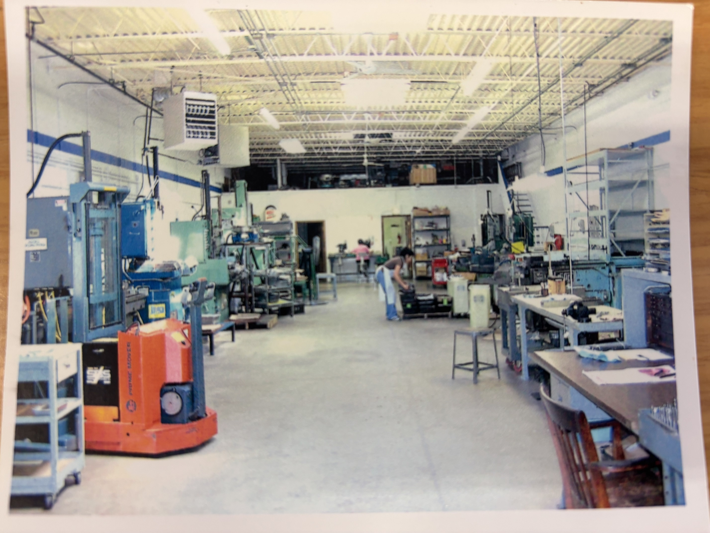
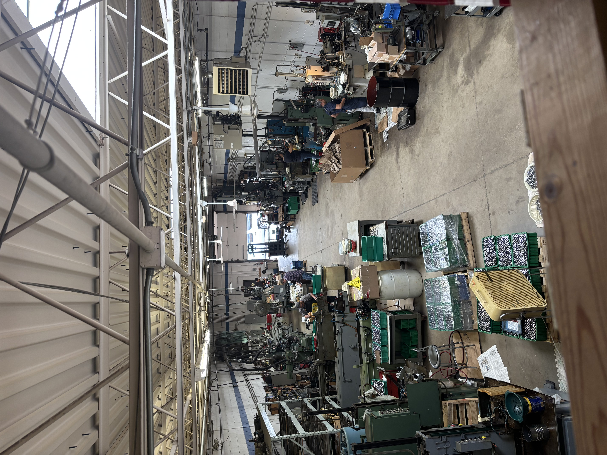

Precision Broaching Since Day One
World Wide Broach delivers high-precision broaching solutions
for demanding industrial applications across aerospace,
automotive, defense, firearms, and heavy manufacturing industries.
Our focus is simple — provide reliable broaching services,
maintain tight tolerances, and support customers with consistent,
production-ready machining solutions.

Built on Experience
World Wide Broach was founded on the principles of
craftsmanship, precision, and long-term manufacturing partnerships.
Over 37 years, the company has continued to evolve alongside
modern manufacturing while maintaining the same dedication to
quality and dependable service that built its reputation.
Modern Manufacturing Capability
Today, World Wide Broach continues to support customers
with precision broaching services for both legacy and
modern production applications.
From internal splines and keyways to custom broached forms,
we remain committed to delivering quality machining solutions
backed by practical manufacturing expertise.
